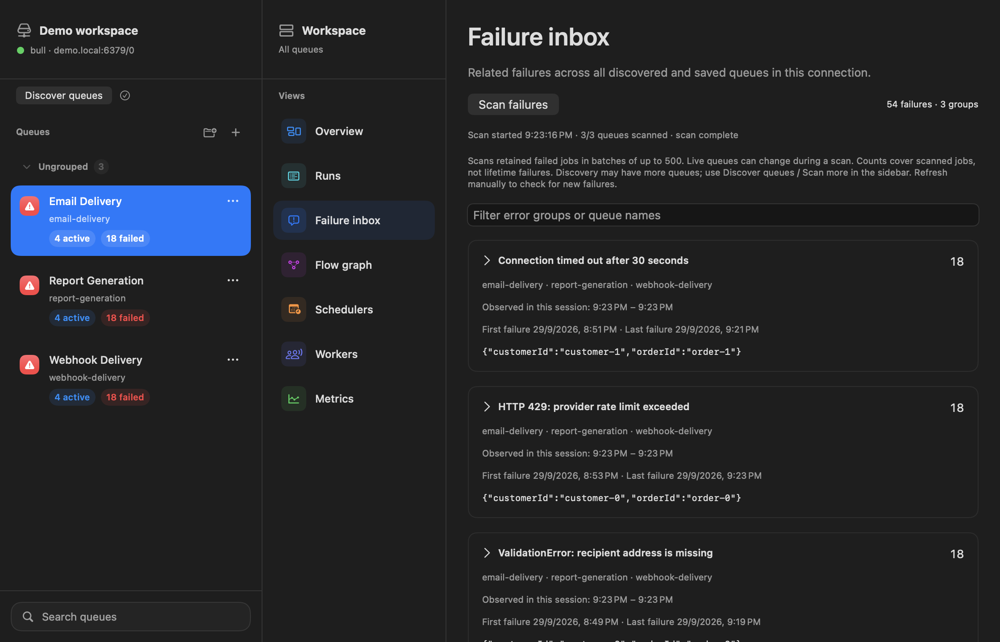
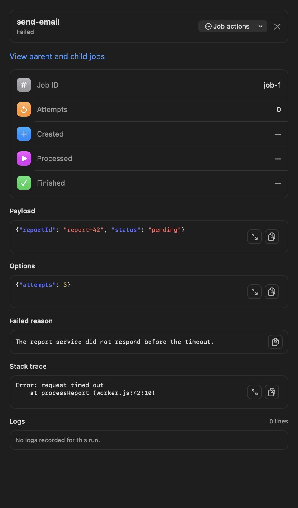
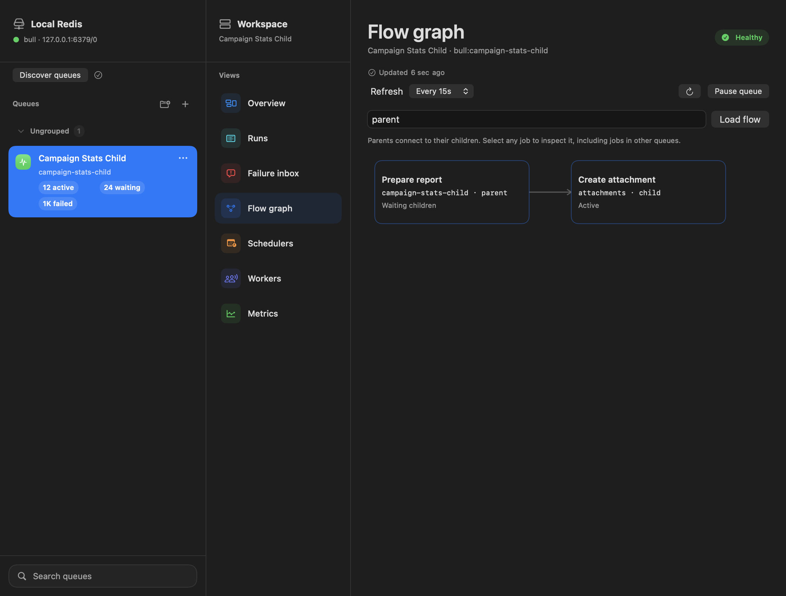

Private Redis, reachable
Connect through SSH with existing keys or an agent. Known-host checks and Redis TLS verification stay intact.
Your BullMQ queues, without another dashboard to deploy. Group related failures, inspect the job behind them, and connect to private Redis—all from your Mac.
Free · macOS 14+ · Apple Silicon & Intel · Signed and notarized

A shorter path to an answer
Explore a three-step walkthrough using real app screens and offline sample data.
Try it yourself: choose Explore offline demo in Connection Manager. No Redis connection needed.
Scan retained failures in bounded batches. Coverage and observation timestamps make it clear what you’re looking at.

Open an individual job to see the full context. On your own writable connection, retry, duplicate, promote, or remove eligible jobs.

Follow a blocked workflow to the child job behind it. Inspect jobs across queues without losing the thread.
Built for the way you work
Connect through SSH with existing keys or an agent. Known-host checks and Redis TLS verification stay intact.
Native controls, light and dark appearances, local connections, and no dashboard service to run.
Start with a read-only profile. Inspect payloads and state before using BullMQ-backed job actions.
Ready when your queues aren’t
Download the ZIP, move QueueScope to Applications, and connect. Updates are available from the app menu.
Download QueueScope 0.5.0 ↓macOS 14 or later · BullMQ 5.77.x
brew install --cask raynirola/tap/queuescopeOur own tap. Same signed and notarized app.
View the cask ↗Help shape what comes next
Found a rough edge or missing feature? Tell us what you were trying to do. Please keep credentials and customer data out of public issues.
Share feedback ↗